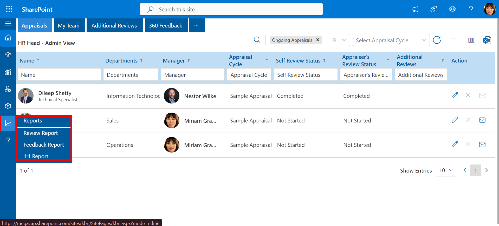
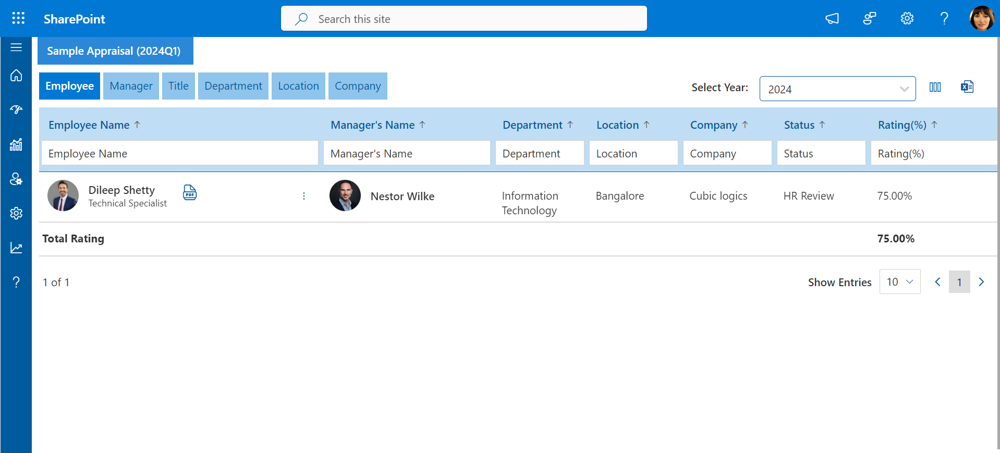
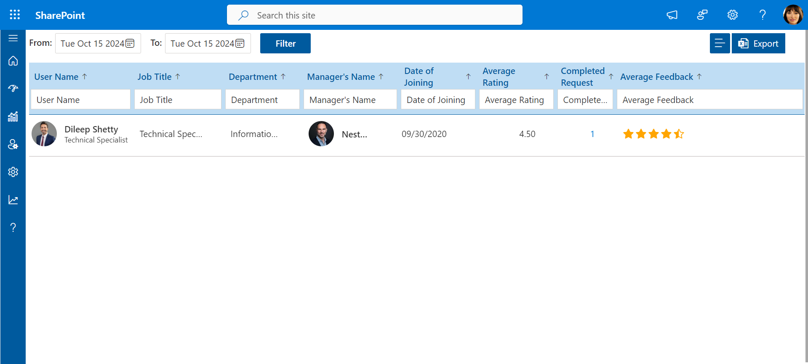
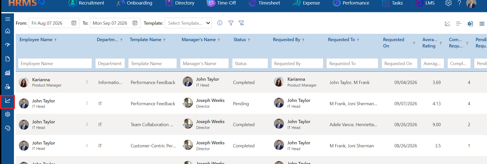
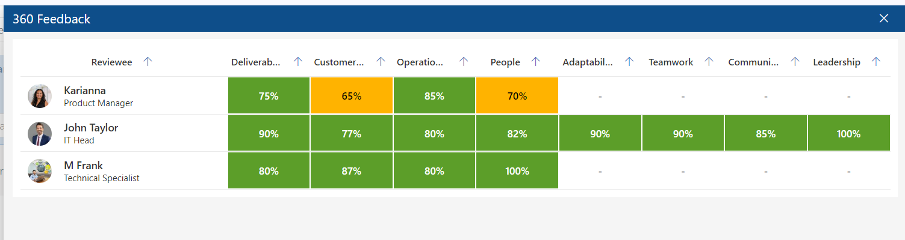
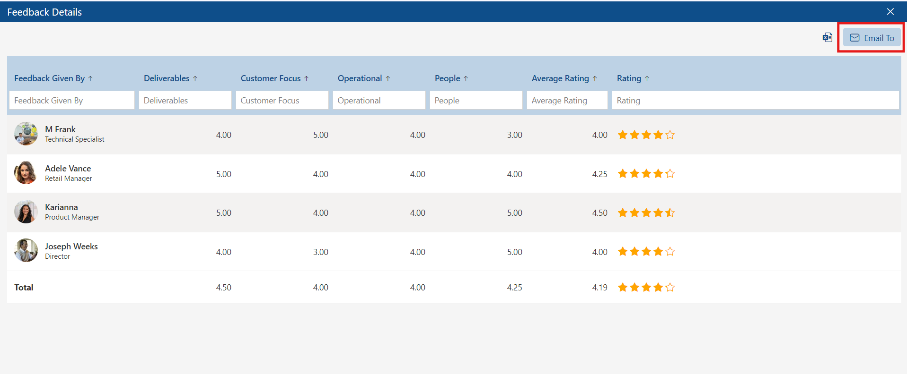
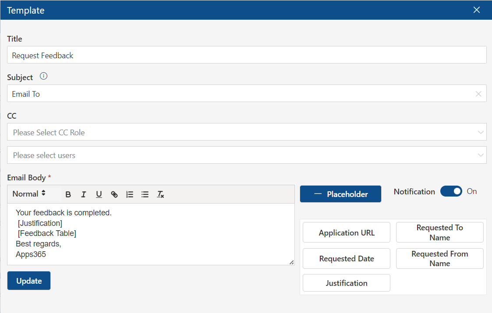
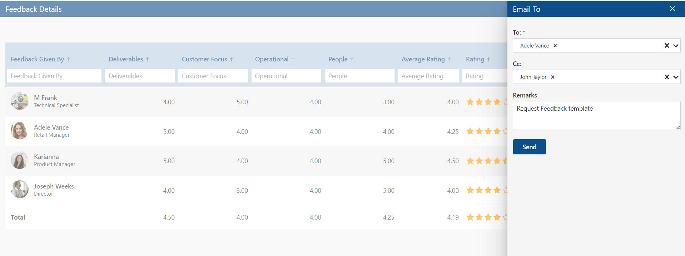

Reports
Admin and HR teams can access and view the report page. Based on the appraisal cycle, as well as 1:1 and feedback reports, the details displayed in the table can be exported to an Excel sheet by clicking the export button. This allows for easy data management and record-keeping across all three report types.

Review Report: This report provides detailed insights into the Appraisal cycle, tracking performance reviews and progress.

Feedback Report: Focused on 360 feedback, it consolidates peer and manager feedback for comprehensive evaluation.

1:1 Report:This tracks the tasks, talking points, and action items from 1:1 meetings, ensuring productive follow-ups and accountability.
360 Feedback – Feedback Report
Overview: The 360 Feedback Report is available to managers and HR roles. It provides a consolidated, filterable view of all feedback activity across the organization — showing each request's status, the employees involved, the template used, average ratings, and completion counts. The report can be accessed from the Reports icon in the left navigation panel within the 360 Feedback module.

360 Feedback Report — manager and HR view
Report Columns
The report displays the following columns for each feedback record:
| Column | Description |
| Employee Name | The employee for whom the feedback was requested. |
| Department | The employee's department. |
| Template Name | The feedback template used for the request. |
| Manager's Name | The employee's direct manager. |
| Status | Current status of the feedback request — Completed or Pending. |
| Requested By | The person who initiated the feedback request. |
| Requested To | The respondent(s) who were asked to provide feedback. |
| Requested On | Date the feedback request was sent. |
| Average Rating | The average score across all completed responses for this request. |
| Completed Requests | Number of respondents who have submitted their feedback. |
| Pending Requests | Number of respondents who have not yet submitted their feedback. |
| Opted-Out Request(s) | Number of respondents who chose to opt out of the feedback request and did not submit a response. |
| Average Feedback | A star-rating visual representing the overall average feedback score for the request, shown alongside the numeric average rating. |
Filtering the Report
The report supports filtering by date range (From / To) and by Template. Use these controls at the top of the report page to focus on a specific period or a specific type of feedback. The report can also be exported to Excel using the export icon in the top-right toolbar.
ℹ Access
The Feedback Report is accessible only to managers and HR roles. Regular employees do not have access to the report view.
Heatmap View
The Feedback Report includes a Heatmap — a visual analytics tool that represents feedback scores across employees and competency categories using a color-coded spectrum. It allows managers and HR to quickly identify organizational strengths, skill gaps, and blind spots at a glance without reading through individual records.
Each cell in the heatmap corresponds to a specific employee and competency (e.g., Deliverables, Leadership, Teamwork). The color indicates the score level: green represents high scores, amber indicates moderate performance, and red flags areas that may need attention. A dash (–) means no feedback data is available for that combination.

360 Feedback Heatmap — color-coded scores by employee and competency
💡 How to read the heatmap
Green — high score (strong performance in this area).
Amber — moderate score (room for development).
Red — low score (attention recommended).
– — no feedback submitted for this competency yet.
Viewing Feedback Details
From the report, you can open any feedback record to view the full Feedback Details panel. It shows each respondent's scores broken down by competency category, their individual average rating, and a total average row across all respondents.

Feedback Details — completed responses with ratings per category
Sharing Feedback via Email (Email To)
From the Feedback Details panel, click the Email To button (top-right) to send the full feedback summary to a chosen recipient. This is useful for sharing results directly with the employee or another stakeholder without them needing to access the report themselves.

Feedback Details — Email To button (top-right)
Clicking Email To opens a panel where you can select the recipient, optionally add a CC, and enter remarks before sending. The email is sent using the Request Feedback (Email To) notification template.

Email To notification template — sends full feedback summary

Email To panel — recipient, CC, and remarks before sending